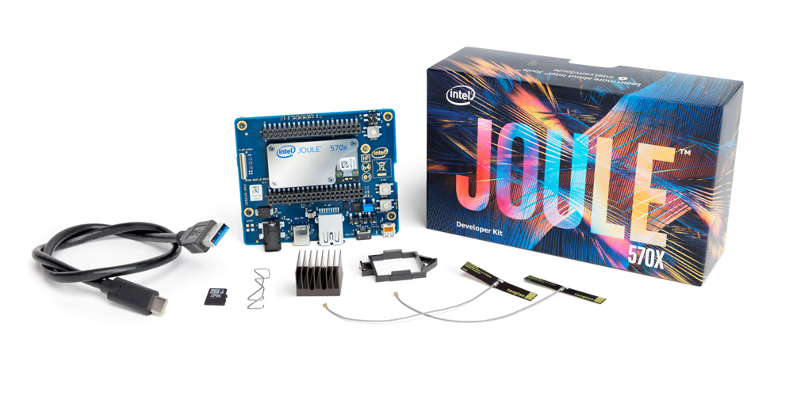
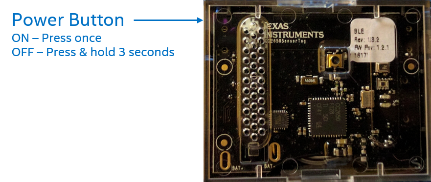
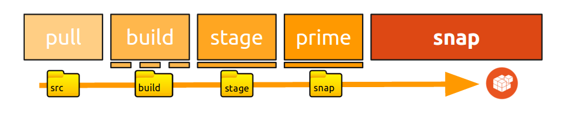

<link rel="import" href="../../../bower_components/polymer/polymer.html">
<link rel="import" href="../../../bower_components/codelab-components/google-codelab-elements.html">
<link rel="import" href="../../../bower_components/app-route/app-route.html">

<dom-module id="IDF16-Workshop">

<template>

  <style>
    :root {
      --google-codelab-header-background: var(--app-primary-color);
      --google-codelab-fab-background: var(--app-primary-color);

      
      --paper-blue-500: var(--app-primary-color);;
    };

    google-codelab-step {
      --google-codelab-step-code: {
        font-family: 'Ubuntu Mono',Helvetica,Arial;
      };
    };
  </style>


  <google-codelab id="codelabobj"
                  title="IDF16 Ubuntu Core Workshop"
                  environment="web"
                  feedback-link="https://github.com/googlecodelabs/your-first-pwapp/issues">
    <app-route
      route="{{route}}"
      tail="{{routeTail}}"></app-route>
    
      <google-codelab-step label="Introduction to Joule and Ubuntu Core" duration="0">
        <p></p>
<p></p>
<p>Ubuntu Core is a new rendition of Ubuntu architected specifically for embedded and IoT systems. Ubuntu Core</p>
<ul>
<li>Is made from the same bits as classic Ubuntu </li>
<li>Is updated transactionally</li>
<li>Automatically confines applications for additional security</li>
<li>Provides safe, reliable and worry free updates and rollback</li>
<li>Provides an amazing developer experience with snapcraft</li>
<li>Is easily extensible</li>
<li>Comes with a store to easily update devices and add/remove apps</li>
</ul>


      </google-codelab-step>
    
      <google-codelab-step label="Create a prototype app for reading sensors data" duration="0">
        <p>At the end of this section, attendees will have connected their PC with a BLE multi sensor tag and they will be able to get data from their sensors.</p>
<p>Download and try the python application on the your system from <code>https://github.com/IanHarvey/bluepy</code> </p>
<pre>~$ git clone https://github.com/IanHarvey/bluepy
...</pre>
<p>You can find the instructions to build and install bluepyon on the README.md file on the repo downloaded, where there are a few dependencies that need to be installed:</p>
<pre>...

To install the current released version, on most Debian-based systems:

    $ sudo apt-get install python-pip libglib2.0-dev
    $ sudo pip install bluepy

...</pre>
<p>Check that you can read data from your Bluetooth Low Energy Sensor Tag. To do this, power up your sensor tag using the button on the side and check the green LED blinks. If the LED on your sensor is not already blinking, press the power button once</p>
<p></p>
<p>Scan bluetooth device to look for your sensor&#39;s MAC address</p>
<p>~$ sudo hcitool lescan | grep -i sensortag</p>
<p>LE Scan ...</p>
<p>A0:E6:F8:B6:E7:86 (unknown)</p>
<p>A0:E6:F8:B6:E7:86 CC2650 SensorTag</p>
<p>Once you have checked that the MAC address of your sensortag is listed so your sensortag is on, call the sensortag program with the following options:</p>
<ul>
<li>--all to get reading from all your sensortag&#39;s sensors</li>
<li>-n 2 to get two consecutive readings</li>
</ul>
<pre>~$ sudo sensortag --all -n 2 A0:E6:F8:B6:E7:86</pre>
<p>You should see an output with the measurements from you sensor tag:</p>
<pre>Connecting to A0:E6:F8:B6:E7:86
(&#39;Temp: &#39;, (26.125, 19.375))
(&#39;Humidity: &#39;, (26.31622314453125, 48.590087890625))
(&#39;Barometer: &#39;, (26.55, 1018.32))
(&#39;Accelerometer: &#39;, (0.049560546875, 0.060791015625, -0.94140625))
(&#39;Magnetometer: &#39;, (-20.841514041514042, 21.44126984126984, -31.337240537240536))
(&#39;Gyroscope: &#39;, (1.13677978515625, 0.091552734375, -2.54058837890625))
(&#39;Light: &#39;, 7.640000000000001)</pre>


      </google-codelab-step>
    
      <google-codelab-step label="Snap it up with snapcraft" duration="0">
        <p>Goal: in this section, you will create a snap that can read data from your sensor tags.</p>
<p>Snapcraft is a set of tools bundled under the snapcraft command to easily create (craft) packages for multiple Linux distributions. These .snap packages generally contain self-contained apps and provide secure isolation.</p>
<p>As a developer you would write code using your regular tools, and let Snapcraft take care of assembling it for distribution. Snapcraft also excels in enabling developers port their existing apps to any snap-enabled Linux platform, like you can do with the Joule board.</p>
<p>The input of snapcraft is a snapcraft.yaml file, so create a snapcraft.yaml file with the following content:</p>
<pre><code>name: sensortag-dev
version: 1.0.5
summary: SensorTag Python Bluetooth LE implementation
description: API and command line tools for Python Bluetooth Low Energy access
confinement: devmode

apps:
  sensortag-dev:
    command: usr/bin/sensortag

parts:
  bluepy:
    plugin: python3
    source: https://github.com/IanHarvey/bluepy
    source-type: git
    build-packages: [libglib2.0-dev]</code></pre>
<p>We&#39;re going to use the snapcraft tool to create a snap based on the yaml file you just created. To do this, execute &#39;snapcraft&#39; in the directory where you created your yaml file:</p>
<pre>~$ snapcraft</pre>
<p><a href="http://snapcraft.io/" target="_blank">Snapcraft</a> will go through different stages to create the snap.</p>
<p></p>
<p>Typing snapcraft will go through the full process and create the snap as a result.</p>
<p>Once you have played around with snapcraft for a bit, you might want to take a look at its <a href="https://developer.ubuntu.com/snappy/build-apps/snapcraft-advanced-features" target="_blank">more advanced features</a> or at an overview of the <a href="https://developer.ubuntu.com/en/snappy/build-apps/snapcraft-syntax/" target="_blank">snapcraft.yaml syntax</a>.</p>
<p>This snap is ready to be shared with the world and ready to be consumed by your devices.</p>
<p>To install a snap, use the snap command:</p>
<pre>~$ sudo snap install the_name_of_your_snap.snap</pre>
<p>You will be able to list the snaps on your system with snap list:</p>
<pre>~$ snap list

snap list
Name                 Version               Rev  Developer   Notes
http-prompt          1.0                   x1               jailmode
mosquitto-mqtt-dev   0.1                   x1               -
sensortag-dev        1.0.5                 x1               devmode
telegram-sergiusens  0.10.1                5    sergiusens  -
ubuntu-core          16.04+20160531.11-56  122  canonical   -
ubuntu-device-flash  3                     3    canonical   devmode
webdm                0.17                  21   canonical   -</pre>
<p>Now let&#39;s use the application in snap format, following the instructions that we covered a section before:</p>
<p>Check that you can read data from your Bluetooth Low Energy Sensor Tag. To do this, power up your sensor tag using the button on the side and check the green LED blinks.</p>
<p>hcitool is a tool to scan bluetooth devices. Let&#39;s enumerate all sensortags with the following command:</p>
<pre>~$ sudo hcitool lescan | grep -i sensortag
LE Scan ...
A0:E6:F8:B6:E7:86 (unknown)
A0:E6:F8:B6:E7:86 CC2650 SensorTag</pre>
<p>Check that the MAC address of your sensortag is listed.</p>
<p>Call sensortag with the following options:</p>
<ul>
<li>--all to get reading from all your sensortag&#39;s sensors</li>
<li>-n 2 to get two consecutive readings</li>
</ul>
<pre>~$ sensortag --all -n 2 A0:E6:F8:B6:E7:86</pre>
<p>You should see an output with the measurements from you sensor tag:</p>
<pre>Connecting to A0:E6:F8:B6:E7:86
(&#39;Temp: &#39;, (26.125, 19.375))
(&#39;Humidity: &#39;, (26.31622314453125, 48.590087890625))
(&#39;Barometer: &#39;, (26.55, 1018.32))
(&#39;Accelerometer: &#39;, (0.049560546875, 0.060791015625, -0.94140625))
(&#39;Magnetometer: &#39;, (-20.841514041514042, 21.44126984126984, -31.337240537240536))
(&#39;Gyroscope: &#39;, (1.13677978515625, 0.091552734375, -2.54058837890625))
(&#39;Light: &#39;, 7.640000000000001)</pre>


      </google-codelab-step>
    
      <google-codelab-step label="How to connect to your Joule board" duration="0">
        <p>Connect your micro USB cable to your laptop and to your Joule board.</p>
<p>Set a serial connection between the two systems.</p>
<p>Install <em>screen</em>, a serial console application, in order to communicate with the Joule board via the serial USB connection.</p>
<pre>sudo apt install screen</pre>
<p>Check if the laptop has detected the serial connection:</p>
<pre>file /dev/serial/by-id/...       [Press tab to auto-complete]</pre>
<p>Establish a serial connection:</p>
<pre>sudo screen /dev/serial/by-id/...       115200</pre>


      </google-codelab-step>
    
      <google-codelab-step label="Install and run the snap in devmode" duration="0">
        <p>Goal: in this section, you will run your snap in dev mode and will be able to get values from the sensors.</p>
<p>You can </p>
<p>Publish your snap by starting a web server in the directory where your snap is:</p>
<pre>python -m SimpleHTTPServer 8080</pre>
<p>Copy your snap from your laptop to your Joule board by executing this code on the Joule board:</p>
<pre>sudo apt install wget
wget your_laptop_ip:8080/your_snaps.snap</pre>
<p>Install the snap in devmode:</p>
<pre>sudo snap install --devmode your_snap.snap</pre>
<p>Use hcitool lescan to get the sensortag addresses:</p>
<pre>~$ sudo hcitool lescan
LE Scan ...
A0:E6:F8:B6:E7:86 (unknown)
A0:E6:F8:B6:E7:86 CC2650 SensorTag</pre>
<p>Call sensortag with --all to get reading from all the sensors and -n 2 to get two readings, do specify the address of your sensortag device.</p>
<pre>~$ sudo sensortag --all -n 1 A0:E6:F8:B6:E7:86</pre>
<p>We will get an output with the measurements from the sensor tag:</p>
<pre>Connecting to A0:E6:F8:B6:E7:86
(&#39;Temp: &#39;, (26.125, 19.375))
(&#39;Humidity: &#39;, (26.31622314453125, 48.590087890625))
(&#39;Barometer: &#39;, (26.55, 1018.32))
(&#39;Accelerometer: &#39;, (0.049560546875, 0.060791015625, -0.94140625))
(&#39;Magnetometer: &#39;, (-20.841514041514042, 21.44126984126984, -31.337240537240536))
(&#39;Gyroscope: &#39;, (1.13677978515625, 0.091552734375, -2.54058837890625))
(&#39;Light: &#39;, 7.640000000000001)</pre>


      </google-codelab-step>
    
      <google-codelab-step label="Questions and feedback" duration="0">
        <p>Please do not hesitate to ask any question regarding:</p>
<ul>
<li>Ubuntu and Ubuntu Core</li>
<li>Intel Joule</li>
</ul>
<p>Please provide us with feedback with this <a href="https://docs.google.com/forms/u/0/d/1mqPMHYmv-77x1WafuRjrLm6SVUpjjjTDVHFoqJTlVkE/edit" target="_blank">quick quiz</a>.</p>


      </google-codelab-step>
    
  </google-codelab>

  
  <script>
    (function(i,s,o,g,r,a,m){i['GoogleAnalyticsObject']=r;i[r]=i[r]||function(){
    (i[r].q=i[r].q||[]).push(arguments)},i[r].l=1*new Date();a=s.createElement(o),
    m=s.getElementsByTagName(o)[0];a.async=1;a.src=g;m.parentNode.insertBefore(a,m)
    })(window,document,'script','//www.google-analytics.com/analytics.js','ga');
    ga('create', 'UA-81281030-1', 'auto');

    (function() {
      var gaCodelab = '';
      if (gaCodelab) {
        ga('create', gaCodelab, 'auto', {name: 'codelab'});
      }

      var gaView;
      var parts = location.search.substring(1).split('&');
      for (var i = 0; i < parts.length; i++) {
        var param = parts[i].split('=');
        if (param[0] === 'viewga') {
          gaView = param[1];
          break;
        }
      }
      if (gaView && gaView !== gaCodelab) {
        ga('create', gaView, 'auto', {name: 'view'});
      }
    })();
  </script>

</template>

<script>

  Polymer({

    is: 'IDF16-Workshop',

    properties: {
      route: {
        type: String
      },
      backURL: {
        type: String,
        value: "/",
      },
    },

    observers: [
      '_getParams(routeTail.__queryParams)'
    ],

    ready: function() {
      
      
      this.$.codelabobj._goToHome = this._goToHome.bind(this)
    },

    _goToHome: function() {
        
        window.location.href = this.backURL;
    },

    _getParams: function(params) {
      if (!params) {
        return;
      }
      if (params.backURL !== undefined) {
          this.backURL = decodeURIComponent(params.backURL)
      }
    },

  });

</script>

</dom-module>
